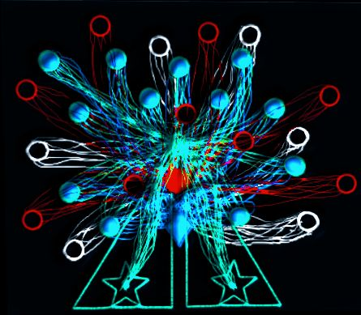

Nos Derniers Articles

Comment l'Intelligence Artificielle peut transformer votre PME Congolaise
L'IA n'est plus un concept futuriste. Découvrez comment des solutions simples peuvent optimiser vos opérations, du service client à l'analyse de données...
Lire la suite →5 Astuces pour Renforcer la Cybers√©curit√© de Votre Entreprise
Les cyberattaques sont une menace réelle pour les PME. Apprenez des mesures simples mais efficaces pour protéger vos données et celles de vos clients...
Lire la suite →